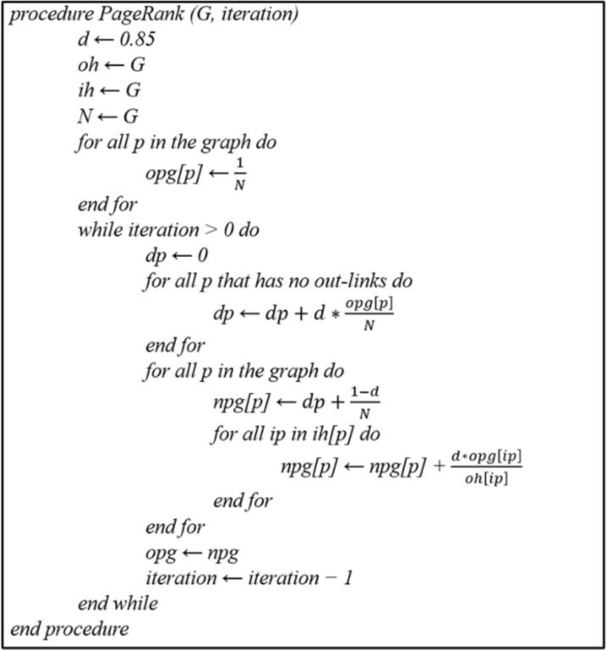

Varshini Subramanian (vsubrama), Mahati Manda (mmanda)
We plan to implement and optimize a parallelized version of the PageRank algorithm using three complementary parallel programming models: OpenMP, MPI, and CUDA, to measure the importance of different nodes in a network. Our goal is to design and benchmark our parallel implementation and compare it against the sequential implementation and potentially other parallel implementations if time persists.
We are interested in parallelizing the PageRank algorithm, which was developed by Google founders for web search ranking based on a numerical importance metric. PageRank works by treating the web as a graph, where webpages are nodes and hyperlinks are edges – a particular webpage receives a high importance score if many pages link to it, or if it is linked by highly ranked pages, thus factoring in both quantity and quality of links. The pseudocode for the algorithm is as follows:
While primarily used for webpage ranking, the PageRank algorithm can also be used for other similar purposes, such as recommendation systems and ranking papers in journals.
There are several key components of PageRank that allow it to benefit from parallelism. Within each iteration, the core operation is evaluating the rank update for each node by aggregating contributions from incoming neighbors – in a sequential implementation, this would be done one node at a time, but a parallel implementation can compute different nodes’ updates in parallel, which would improve performance. Additionally, both sparse vector-matrix multiplication (used for traversing adjacency lists) and the iterative power method are highly parallelizable algorithms, so we hope to exploit parallelism here as well.
While PageRank lends itself naturally to parallelism, this project is challenging due to performance challenges that will arise from the structure of large real-world graphs and the memory-bound nature of the algorithm. The algorithm requires scanning numerous edges and each iteration has little computation per edge, but requires significant memory movement. This makes overall performance sensitive to memory bandwidth, memory access patterns, and communication overhead in distributed settings. We hope to learn how different parallel paradigms handle irregular, sparse, memory-bound workloads, what bottlenecks will dominate in each model, how graph structure affects load balancing and scaling, and how effectively parallelism can accelerate PageRank given its constraints.
PageRank uses an iterative power method, so within each iteration, updates to nodes are independent as long as the previous iteration’s vector is read-only. Because of this, we plan to parallelize node computations, as well as the iterative power method/sparse matrix-vector multiplication, using the different programming models. However, between iterations, each step depends on the results of the previous step. This is where our dependency would be and where we would need to work to synchronize the program to ensure the correctness of our implementation.
PageRank is primarily memory-bound rather than compute-bound so some constraints would be related to how much memory is required to store large graphs, particularly when dealing with dense matrices. Additionally, cache locality would become a significant constraint as PageRank’s random access patterns and large vector sizes mean that vector value accesses may exceed cache capacity often, leading to costly memory transfers. Thus, performance is restricted by memory bandwidth, cache efficiency, and whether we can fit the critical working set in fast-access memory.
We will be using multi-core CPU nodes and MPI capable clusters on the PSC Bridges-2 machines if provided which will allow us to run both OpenMP and MPI experiments at varying thread and processor counts. Additionally, to implement parallelism using CUDA, we will also need to use GPU nodes so we can evaluate the performance of PageRank under parallel execution. However, similar to the previous assignments, we will use the GHC machines for debugging purposes and reserve PSC use only for evaluation. We will be starting from the sequential PageRank code and then trying to parallelize that. The paper we will use as reference to how to do this is: “Performance Analysis of Parallelized PageRank Algorithm using OpenMP, MPI and CUDA” where we are given a starting point on how to implement the PageRank Algorithm in a parallel fashion. For now we think these resources would be sufficient and would benefit from access to the PSC machines.
To parallelize our algorithm, we plan to use OpenMP, MPI, and CUDA. OpenMP is well suited for PageRank, since each iteration of the PageRank algorithm contains loops over nodes in the graph that can be parallelized, which would allow us to effectively use multicore CPUs. CUDA is also a good fit, since it’s naturally suited to handle the parallelization of sparse matrix-vector multiplication and iterative powers, which comprise the bulk of PageRank’s computation. Lastly, we chose to explore MPI due to the memory-bound nature of PageRank - MPI allows us to partition the graph across multiple nodes, which in theory would benefit the scalability of PageRank, so we wanted to explore this as well.
| Week | Date | Weekly Goal | Deadline |
|---|---|---|---|
| 1 | 11/17–11/23 |
Implement Sequential PageRank Create validation script Implement OpenMP parallelization Evaluate OpenMP performance |
Project Proposal Due |
| 2 | 11/24–11/30 |
Implement MPI parallelization Evaluate MPI performance Implement CUDA parallelization Evaluate CUDA performance |
|
| 3 | 12/1–12/7 |
Further performance evaluation If time: implement hybrid or Gauss-Seidel PageRank Finalize report |
Milestone Report Due |
| 4 | 12/8–12/12 | Finalize project and submit final report | Final Report Due |